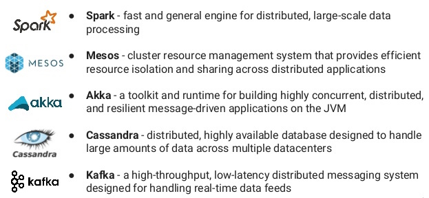
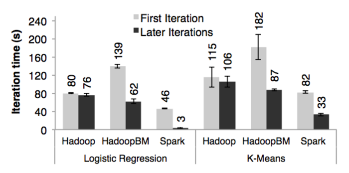

{chris,jason}@datascience.com
Presenter Notes
Resources
- Spark Project Docs
- Karau et al's Learning Spark: Lightning-Fast Big Data Analysis
- This course's Github Project
Presenter Notes
Lecture 1: The Spark Ecosystem
Presenter Notes
Matei Zaharia
$$ $$ "One of the Spark project goals was to deliver a platform that supports a very wide array of diverse workflows - not only MapReduce batch jobs (there were available in Hadoop already at that time), but also iterative computations like graph algorithms or Machine Learning. And also different scales of workloads from sub-second interactive jobs to jobs that run for many hours."
Presenter Notes
Hadoop for your RAM
Apache Spark is an open-source, parallel, distributed, general-purpose cluster computing framework with distributed, in-memory data processing. $$ $$ In contrast to Hadoop’s two-stage disk-based MapReduce processing engine, Spark’s multi-stage in-memory computing engine allows for running most computations in memory, and hence provides better performance for iterative applications, e.g. machine learning algorithms and interactive data mining.
Presenter Notes
A Bit of History

https://medium.com/@markobonaci/the-history-of-hadoop-68984a11704
https://www.youtube.com/watch?v=SxAxAhn-BDU
Presenter Notes
OpenMP (1997)

started w/ Backus' Fortran 1.0 in 1997. parallel processing only done on expensive supercomputers. complex and not robust to node failures.
Presenter Notes
MapReduce (2004)

combined FP primitives with world-class cluster computing know-how. the simple MR framework (read Backus) meant that all of a sudden it became relatively simple and reliable to compute with large arrays of cheap nodes, any of which might fail. these guys are legends. they are also behind tensorFlow.
Presenter Notes
Hadoop (2006)

open source MapReduce. became a top level apache project in 2006. batched processing. static pageRank anecdote. by 2006 google had already moved on to streaming.
Presenter Notes
SMACK (2014)

Kafka takes care to event transport, Cassandra is used to persist and distribute events. While Spark and Akka can be combined to build various data analysis pipelines for both large data sets, event processing, in order to meet the required throughput, and latency constraints. Mesos serves as a task coordinator, facilitating the distribution of tasks and jobs in the cluster.
Presenter Notes
Why Scala: Productivity
Spark is essentially distributed Scala (sc.parallelize(0 to 100)). Basic syntax and Collections API are all that's needed to become productive.
$$
$$
You use the same language (often the same code) for iterative exploration as you do for large jobs.
Framework and language have converged. Scala Collections API, Spark API, Scalding API, Kafka API are almost identical. Python and R are second-class citizens.
Presenter Notes
Why Scala: Ecosystem
Scala integrates well with the big data ecosystem, which is also JVM based. $$ $$ In addition to Scala-native frameworks like Spark and Kafka, there are many successful projects on top of mixed Java / Scala frameworks:
Scalding (Cascading), Algebird / Summingbird (Scalding and Spark), Finagle (Akka), Scrunch (Crunch), Flink (Java and Scala)
Presenter Notes
Why Scala: Functional Paradigm
A third benefit is the functional paradigm which fits well within the Map/Reduce and big data model. $$ $$ Batch processing works on top of immutable data, transforms with combinators, and generates new copies. Real time log streams are essentially lazy streams.
Presenter Notes
Most Scala data frameworks have the notion of some abstract data type that's extremely consistent with Scala's collection API.
$$
$$
Glance at TypedPipe in Scalding and RDD in Spark, and you'll see that they all have the same set of combinator methods, e.g. map, flatMap, filter, reduce, fold and groupBy.
Presenter Notes
Spark libraries also have frequent reference of category theory (eg monoids, monads, applicative functors etc) to guarantee the correctness of distributed operations. $$ $$ Equipped with this knowledge it will be a lot easier to understand techniques like map-side joins and reduces.
Presenter Notes
Hello World in Spark
val lines = sc.textFile( "1950.txt" )
lines.flatMap( (l) => l.split(" ") )
.map( (w) => (w,1) )
.reduceByKey( _ + _ )
.saveAsTextFile( "WordCount.txt" )
this code looks fairly unremarkable, as if map and reduce are simply part of the core language.
Presenter Notes
Spark Stack

Spark can run over a variety of cluster managers, including Hadoop YARN, Apache Mesos, and a Standalone Scheduler. SparkSQL Spark’s package for working with structured data (DataFrames) and semi-structured data (DataSets). Spark Streaming is a Spark component that enables processing of live streams of data. GraphX is a library for manipulating graphs and performing graph-parallel computations (We will cover these in the Methods class). Spark's machine learning library (We will cover MLlib in the Models class). Spark Core contains the basic functionality of Spark: task scheduling, memory management, fault recovery, interacting with storage systems, etc. The RDD API will be our point of departure in this course.
Presenter Notes
Benefits of Tight Integration
-
Higher-level components in the stack benefit from improvements at the lower layers
-
Organizational costs associated with running the stack are minimized
-
Combine batch, interactive, and stream processing processing with a unified API
For example, when Spark’s core engine adds an optimization, SQL and machine learning libraries automatically speed up as well. These costs include deployment, maintenance, testing, support, and others. This also means that each time a new component is added to the Spark stack, every organization that uses Spark will immediately be able to try this new component. Spark’s design is also fairly simple and the Scala codebase is fairly small relative to the features it offers.
Presenter Notes
Computation Model
Spark supports diverse workloads, but is optimized for low-latency iterative tasks. $$ $$ These sorts of computation occur often in Machine Learning and graph algorithms.
Many Machine Learning algorithms require plenty of iterations before the result models get optimal, like logistic regression. The same applies to graph algorithms to traverse all the nodes and edges when needed. Iterative computations can increase their performance when the interim partial results are stored in memory. Spark can cache intermediate data in memory for faster model building and training.
Presenter Notes
Spark creates a directed acyclic graph (DAG) of computation stages to submit jobs to the cluster manager. $$ $$ Spark uses a lazy evaluation model (i.e. postpones any processing until an action is performed).
Presenter Notes
val lines = sc.textFile("1950.txt") //creation
val nyt = "Special to THE NEW YORK TIMES."
val linesWithNYT = lines.filter {_ contains nyt} //transformation
linesWithNYT.count() //action
Presenter Notes
Spark and Hadoop
$$ $$
| RDD | DSM | |
|---|---|---|
| Evaluation | lazy | strict |
| Writes | coarse grained | fine grained |
| Recovery | lineage | check point |
| Consistency | trivial / immutable | delegated |
Presenter Notes
 $$ $$ Duration of the first and later iterations in Hadoop, HadoopBinMem and Spark for logistic regression and k-means using 100 GB of data on a 100-node cluster. source
Hadoop: The Hadoop 0.20.2 stable release. HadoopBinMem: A Hadoop deployment that converts the input data into a low-overhead binary format in the first iteration to eliminate text parsing in later ones, and stores it in an in-memory HDFS instance.
Presenter Notes
Presenter Notes
Spark Context
At a high level, every Spark application consists of a driver that launches various parallel operations on a cluster. $$ $$ The driver program contains your application’s main function and defines distributed datasets on the cluster, then applies operations to them.
Presenter Notes
Driver programs access Spark through a SparkContext object, which represents a connection to a computing cluster.
$$
$$
A Spark context is essentially a client of Spark’s execution environment and acts as the director of your Spark application.
Presenter Notes
SparkContext in turn requires a SparkConf object for configuration.
$$
$$
Refer to Spark Configuration for further discussion of how to configure Spark.
Presenter Notes
SparkContext offers a lot of functionality, for example:
- Creating / deleting RDDs
- Setting # of RDD partitions
- Creating accumulators
- Creating broadcast variables
- Distributing JARs to workers
- Accessing services, e.g. Task Scheduler, DAGScheduler, Listener Bus, Block Manager, Shuffle Manager.
- Closure Cleaning
- Running jobs
Presenter Notes
Running jobs
All RDD actions in Spark launch jobs (that are run on one or many partitions of the RDD) using SparkContext.runJob(rdd: RDD[T], func: Iterator[T] => U): Array[U].
$$
$$
Running a job is essentially executing a function on all or a subset of partitions in an RDD and returning the result as an array (with elements being the results per partition).
Presenter Notes
Challenge Question
Run a job using runJob on the lines RDD with a function that returns 1 for every partition.
$$
$$
What can you say about the number of partitions of the lines RDD?
Presenter Notes
Presenter Notes
Now run the following code. Is your result different than before? Why?
val foo = sc.parallelize(0 to 10)
sc.runJob(foo, (t: TaskContext, i: Iterator[Int]) => 1)
Presenter Notes
A job is a top-level work item (computation) submitted to DAGScheduler to compute the result of an action.
$$
$$
Computing a job is equivalent to computing the partitions of the RDD the action has been executed upon.
Presenter Notes
WebUI
Spark comes with Web UI (aka webUI) to inspect job executions using a browser.
Every SparkContext launches its own instance of Web UI, available at http://[master]:4040 by default (the port can be changed using spark.ui.port).
Presenter Notes
It offers tabs with the following information:
- Jobs
- Stages
- Storage (with RDD size and memory use)
- Environment
- Executors
- SQL
You can view the web UI after the fact after setting spark.eventLog.enabled to true before starting the application.
Presenter Notes
For standalone applications you must create your own Spark context.
import org.apache.spark.SparkConf
import org.apache.spark.SparkContext
import org.apache.spark.SparkContext._
val conf = new SparkConf().setMaster("local")
.setAppName("My App")
val sc = new SparkContext(conf)
In Zeppelin, the driver program is the Spark interpreter itself.
Presenter Notes
The cluster URL tells Spark how to connect to a cluster. local is a special value that runs Spark on one thread on the local machine, without connecting to a cluster. $$ $$ The application name identifies your application to the cluster manager. $$ $$ Note that only one SparkContext may be running in a single JVM (check out SPARK-2243 Support multiple SparkContexts in the same JVM)
Presenter Notes
Building and Submitting Executables
We can build applications using Scala / JVM tools like Gradle, Maven, or sbt:
name := "hello-world"
version := "0.0.1"
scalaVersion := "2.10.4"
// additional libraries
libraryDependencies ++= Seq(
"org.apache.spark" %% "spark-core" % "1.2.0" % "provided"
)
We'll learn about how to do this using sbt in lab.
Presenter Notes
spark-submit
Once you have your build defined, you can use spark-submit to submit it to a Spark deployment environment.
$$
$$
You'll find spark-submit in bin directory of the Spark distribution.
Presenter Notes
Spark Shell
Spark shell is an interactive shell for learning about Apache Spark, ad-hoc queries and developing Spark applications.
$$
$$
It is a very convenient tool to explore Spark and one of the many reasons why Spark is so helpful even for very simple tasks.
$$
$$
There are two main variants: spark-shell for Scala and pyspark for Python.
Presenter Notes
You start Spark shell using spark-shell script (available in bin directory).
$ ./bin/spark-shell
Spark context available as sc.
SQL context available as sqlContext.
Welcome to
____ __
/ __/__ ___ _____/ /__
_\ \/ _ \/ _ `/ __/ '_/
/___/ .__/\_,_/_/ /_/\_\ version 1.6.0-SNAPSHOT
/_/
Presenter Notes
When you execute spark-shell it executes Spark submit as follows:
$$
$$
org.apache.spark.deploy.SparkSubmit --class org.apache.spark.repl.Main --name Spark shell spark-shell
$$
$$
Set SPARK_PRINT_LAUNCH_COMMAND to see the entire command to be executed.
Presenter Notes
Spark shell gives you the sc value which is the SparkContext for the session.
scala> sc
res0: spark.SparkContext = spark.SparkContext@2ac0cb64
Presenter Notes
You can query for the values of Spark properties in Spark shell as follows:
scala> sc.getConf.getOption("spark.local.dir")
res1: Option[String] = None
scala> sc.getConf.getOption("spark.app.name")
res2: Option[String] = Some(Spark shell)
Presenter Notes
There is also an sqlContext object to use with Spark SQL.
scala> sqlContext
res1: spark.sql.SQLContext = spark.sql.hive.HiveContext@60ae950f
Presenter Notes
To close Spark shell, you press Ctrl+D or type in :q (or any subset of :quit).
scala> :quit
Presenter Notes
Lecture 2: RDD's
Presenter Notes
RDD - Resilient Distributed Dataset
Resilient Distributed Dataset (RDD) is the primary data abstraction in Spark. It is a distributed collection of items.
The original paper is a great read: https://www.cs.berkeley.edu/~matei/papers/2012/nsdi_spark.pdf
Presenter Notes
You use a Spark context to create RDDs. $$ $$ When an RDD is created, it belongs to and is completely owned by the Spark context it originated from. RDDs can’t by design be shared between SparkContexts.
Presenter Notes
At a high level, any Spark application creates RDDs out of some input, run (lazy) transformations of these RDDs to some other form (shape), and finally perform actions to collect or store data.
Presenter Notes
Transformations
def map[U]( f:(T) => U ) : RDD[U]
def flatMap[U]( f:(T) => Seq[U] ) : RDD[U]
def filter( f:(T) => Boolean ) : RDD[T]
def keyBy[K]( f:(T) => K ) : RDD[(K,T)]
def groupBy[K]( f:(T) => K ) : RDD[(K,Seq[T])]
def sortBy[K]( f:(T) => K ) : RDD[T]
def distinct( ) : RDD[T]
def intersection( rdd:RDD[T] ) : RDD[T]
def subtract( rdd:RDD[T] ) : RDD[T]
def union( rdd:RDD[T] ) : RDD[T]
def cartesian[U]( rdd:RDD[U] ) : RDD[(T,U)]
def zip[U]( rdd:RDD[U] ) : RDD[(T,U))
def sample( r:Boolean, f:Double, s:Long ): RDD[T]
def pipe(command: String): RDD[String]
Presenter Notes
Actions
// Trigger execution of DAG.
def foreach( f:(T) => Unit ) : Unit
def reduce( f:(T,T) => T ) : T
def fold(z:T)( f:(T,T) => T ) : T
def min() : T
def max() : T
def first() : T
def count() : Long
def countByKey() : Map[K,Long]
def collect( ) : Array[T]
def top( n:Int ) : Array[T]
def take( n:Int ) : Array[T]
def takeOrdered( n:Int ) : Array[T]
def takeSample( r:Boolean, n:Int, s:Long ) : Array[T]
def aggregate[U](z: U)(seq: (U, T) => U, comb: (U, U) => U): U
Presenter Notes
As we mentioned last time, RDD actions in Spark launch jobs.
$$
$$
The number of partitions in a job depends on the type of a stage - ResultStage or ShuffleMapStage.
$$
$$
A job starts with a single target RDD, but can ultimately include other RDDs that are all part of the target RDD’s lineage graph.